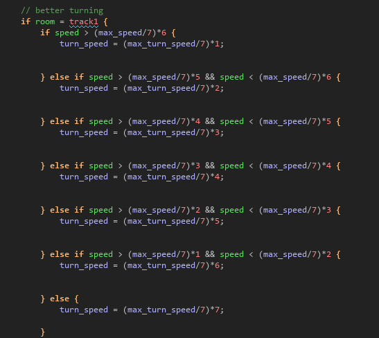
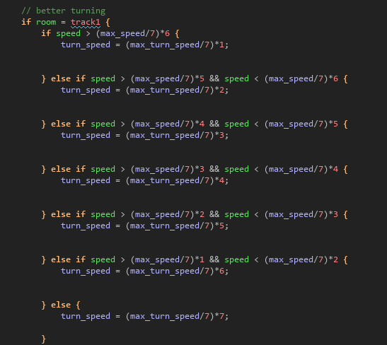

TimeChampions

What is TimeChampions
TimeChampions is a fun and challenging top down view racing game
made as the final assignment for the minor 'Creative Design & Technology'
at the Saxion university of applied sciences.
Why did I create this game
This minor differs a lot from my main study, which is Automotive Engineering.
To challenge myself and explore my creative side I dicided that trying to
make a video game and all the visuals for it was a good and challenging
way to test my skills and knowledge. I did however want to keep some connection
with my main study, which is way I decided to create a racing game.
Gamemaker Studio 2
To create my game I decided to use Gamemaker Studio 2. This engine is a great
beginner friendly tool for creating 2D games. It has great support which allowed
me to find all the help I needed.
Krita

To create the visuals for my game I decided to use Krita. This tool is an Image
manipulation program. As the name implies it allows for image manipulation
but additionally it is also a painting program. This combination of features
allowed me to create the cars in the game, which are based on real cars.


The playable cars above from left to right are: "Volkswagen Golf", "Peugeot 309",
"Audi 80", "Citroen BX", "Renault 5" and "Volvo 240". These cars are created by
loading a top down image of the cars into Krita, scaling them down and then
tracing them. After that it is as simple as filling them in and shading them.
Game Images
Download
To download TimeChampions click the link below.
TimeChampions Download
How I created TimeChampions
The following images will show some of the code behind TimeChampions
and explain some of the innerworkings of the game.
Cars
All the cars in the game use the same code to control them. the images below show this code.
the accelerating and decelerating is done simply by checking if the up arrow is pressed.
If it is then the car accelerates, if it is not then the car decelerates.
If the down arrow is pressed then the car decelerates a bit more quickly.
The turning is limited by speed. The faster the player is driving the slower the car turns.
 

Car selection
The car selection is simply done by creating clickable objects out of the playable cars.
All cars have a global variable which can either be true or false. Depending on what
car the player clicks on, the corresponding variable will be turned to true indicating
that this car is selected. This will also move the car forward slighly, turn all the
other variables to false and change the image that displays the statistics of the car.


Collisions
The collisions with the trackborders are done by checking if the used car and the collisionmasks
are overlapping. If they are than the speed of the car is reduced to two, and the car is
pushed back a couple pixels in the opposite direction that the car is hitting the mask with.
This ensures that the car does not get stuck in the trackborders.
Timers
To time the player on track and time the countdowns, multiple timers are present in the game.
The main one being the start timer. This timer takes care of starting the game, starting the
timing system and limiting the players movements.
The start timer is started every time a track room is loaded. Its starts running down its first
alarm which times the coundown display. Once this alarm has reached zero it will free up the players
movement and allows the second alarm to be started. This alarm is started if the player drives over
the trigger and stopped if the player crosses it again. Once the timer is stopped the finish display
is shown and the controls are taken away from the player once again.